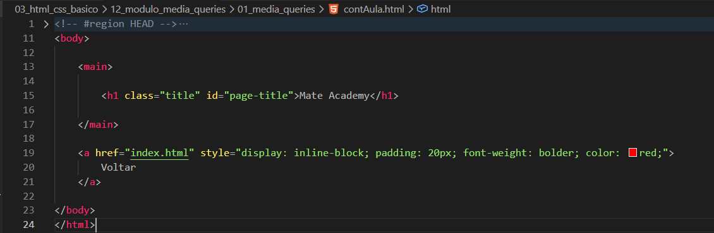
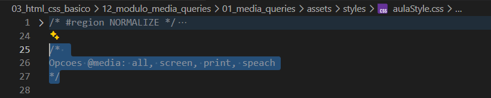

Media Queries
Intro
Agora iremos aprender sobre design responsivo e como adaptar nosso site para diferentes tamanhos de tela utilizando media queries.
Agora iremos aprender sobre design responsivo e como adaptar nosso site para diferentes tamanhos de tela utilizando media queries.
HTML:

CSS:

O @media permite criar estilos diferentes dependendo do tamanho da tela, orientacao do dispositivo ou outros fatores.
Algo importante é lembrar da especificidade. Normalmente colocamos o @media no final do arquivo CSS para evitar conflitos com outros estilos.
O or permite aplicar estilos quando uma das condicoes for verdadeira.
Exemplo:
@media screen and (max-width: 768px), screen and (orientation: portrait)
Nesse caso, o CSS sera aplicado caso uma das condicoes seja verdadeira.
O and exige que todas as condicoes sejam verdadeiras para que o CSS seja aplicado.
Exemplo:
@media screen and (min-width: 768px)
Nesse caso, os estilos serao aplicados apenas quando a tela possuir no minimo 768px.
A propriedade orientation verifica a orientacao da tela do dispositivo.
Exemplo:
@media (orientation: landscape)
A propriedade resolution permite verificar a densidade de pixels da tela.
Exemplo:
@media (min-resolution: 100dpi)
Ela pode ser utilizada para adaptar imagens e elementos para telas com maior qualidade.
A tag viewport ajuda o navegador a adaptar corretamente o tamanho da pagina em dispositivos moveis.
Principais valores:
viewport: Faz o navegador adaptar corretamente o tamanho da pagina em dispositivos menores.
width=device-width: Define a largura da pagina baseada no tamanho do dispositivo.
initial-scale=1.0: Define o zoom inicial da pagina.
Conteudo da aula